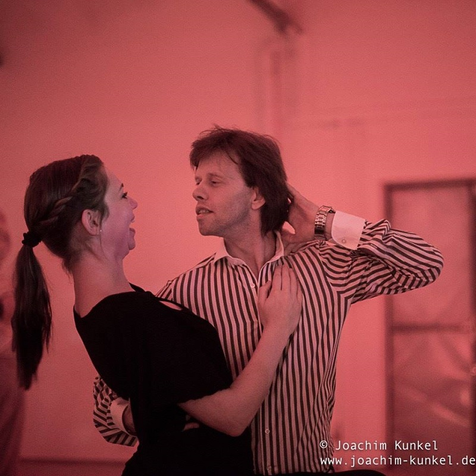

» Unterricht:
Unser Unterricht hat zum Ziel, die Grundelemente des Tango Argentino zu vermitteln und darüber hinaus einen Einblick in die traditionsreiche Geschichte dieses magischen Tanzes und seine kulturelle Entwicklung bis in die Gegenwart zu geben.
Das Unterrichtskonzept ist auf den Erkenntnissen der von der Andreas Ernst entwickelten SCR-Methode (Sensitive-Contact-Release) aufgebaut. Dieses System erlaubt, weit mehr als nur Schrittkombinationen zu vermitteln. Es bietet die Möglichkeit ein sehr hohes tänzerisches Niveau zu erreichen.
Ein starker Akzent wird auf die feinmotorische Körperarbeit gesetzt. Denn ein schönes, elegantes Tanzen hängt nicht von einem bestimmten Stil ab, sondern von einer grundlegenden Elastizität des Körpers.
Das bloße Aneinanderreihen von Figuren macht noch keinen guten Tänzer aus.
Ein weiterer wichtiger Bestandteil des Unterrichts ist die individuelle Arbeit mit den Paaren - jedes Paar hat eigene Bedürfnisse, die es zu erkennen gilt. Und nicht zuletzt - darf bei uns auch mal gelacht werden; denn Tango ist nicht immer und ausschließlich eine traurige Angelegenheit!

Das Unterrichtsspektrum in unseren Kursen umfasst
- Tango de Salón
- Tango Milonguero
- Tango Nuevo
- Tango- Vals
- Milonga con traspié
- Grundlagen der Tango- Musiktheorie (Rhythmus, Melodie, Struktur der Tangomusik erkennen und zu Tanzen
Sie sind herzlich eingeladen, diese unkonventionelle, aber sehr effektive und bewährte Art des Tangounterrichts mit uns kennen zu lernen.
Neben den Gruppenkursen bieten wir an:
- Einzelunterricht für Paare
- Unterricht für Einzelpersonen
Für alle, die sich ein intensiveres und individuelles Lernen wünschen oder an spezifischen Fragestellungen arbeiten möchten.
Der tänzerische Schwerpunkt in den Einzelstunden wird individuell festgelegt und orientiert sich an den persönlichen Zielen und Möglichkeiten der Schülerinnen und Schüler:
- Frauentechnik
- Männertechnik
- Tango de Salon
- Führungstechnik
- Encuentro Milonguero
- Analyse unterschiedliche Caminadas (Geharten) im Tango
- Grundlagenarbeit (Haltung, Achse, Connection, Gleichgewicht, Körperarbeit…)
- Tango Nuevo, sowie auf Wunsch auch Elemente des Show- und Bühnentangos
- Tangomusik für Tänzer (Schulung für genaues Hinhören und zur Musik zu tanzen
|